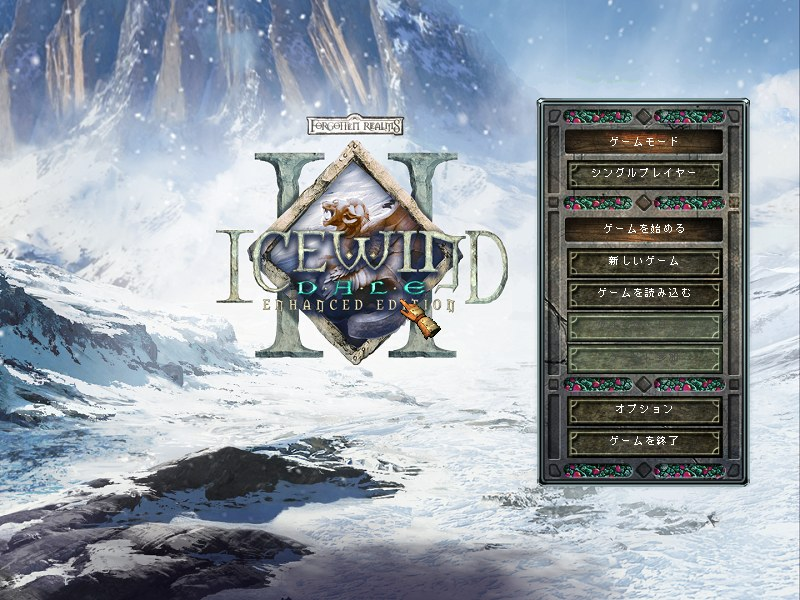
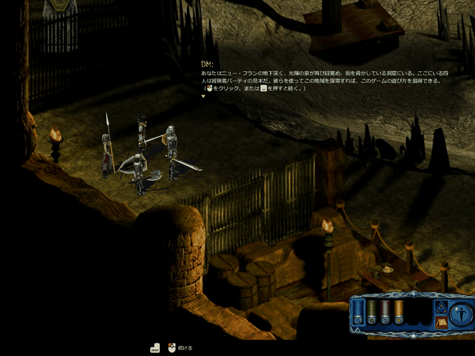
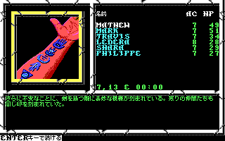
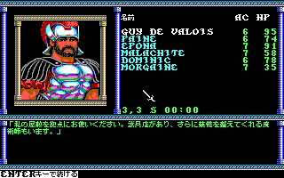
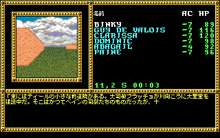

ご意見・誤訳の報告
誤訳や不自然な訳に気づいたら、各作品のページにある GitHub の Issues で教えてください。
ダンジョンズ＆ドラゴンズ（Dungeons & Dragons）のルールで遊ぶコンピューター RPG を、日本語で遊べるようにする、非公式のファンメイド日本語化プロジェクトです。 GOG.com や Steam で販売されている版を対象にしています。 どのパッチも、外せば英語に戻ります。







誤訳や不自然な訳に気づいたら、各作品のページにある GitHub の Issues で教えてください。